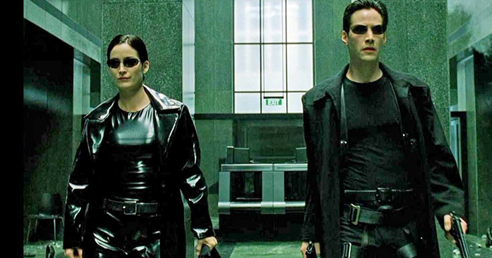
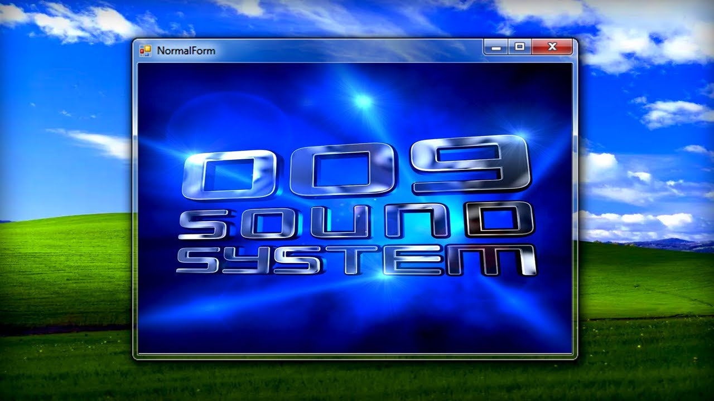
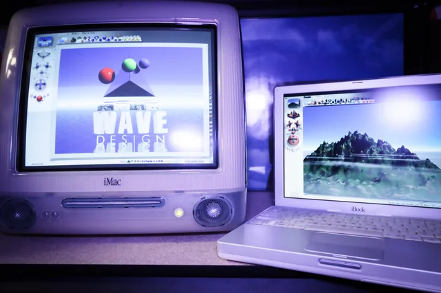
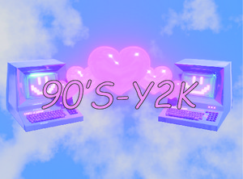
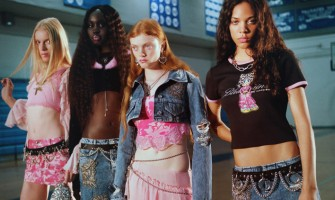
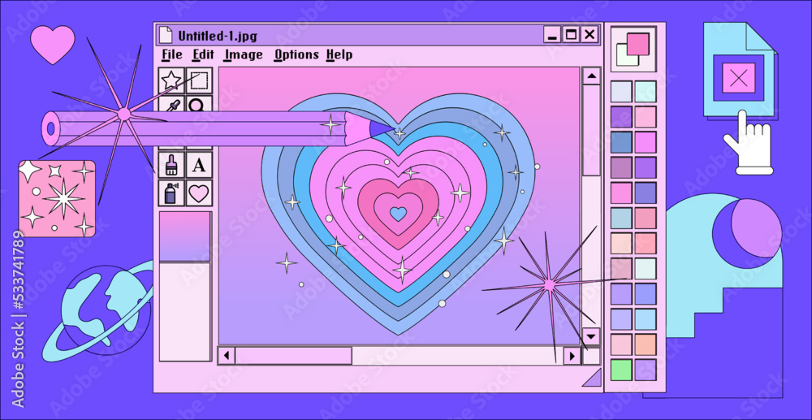

A estética Y2K, sigla para "Year 2000", refere-se ao conjunto de tendências visuais e culturais que marcaram o final dos anos 1990 e o início dos anos 2000. Esse período foi profundamente influenciado pela rápida expansão da internet, pela popularização dos computadores pessoais e por uma crescente expectativa em relação ao futuro tecnológico.
Y2K

O contexto histórico é fundamental para entender essa estética. A virada do milênio trouxe consigo tanto entusiasmo quanto incerteza. Havia uma sensação coletiva de que o mundo estava prestes a entrar em uma nova era digital, ao mesmo tempo em que existiam preocupações reais, como o chamado "bug do milênio".

Visualmente, o Y2K se caracteriza por elementos que buscavam representar esse futuro imaginado. Superfícies metálicas, acabamentos cromados, transparências, efeitos de brilho intenso e interfaces digitais complexas eram amplamente utilizados. As cores tendiam a ser vibrantes, com destaque para tons neon, prateados e azuis elétricos.

Além disso, havia uma forte influência da cultura pop e da mídia da época. Videoclipes, comerciais, capas de álbuns e interfaces de softwares contribuíram para consolidar uma linguagem visual que misturava fantasia e tecnologia. O resultado era um estilo muitas vezes exagerado, mas carregado de identidade.

A estética Y2K também reflete a forma como o futuro era imaginado naquele momento. Diferente das representações atuais, mais minimalistas, o futuro dos anos 2000 era visualmente intenso, cheio de elementos gráficos e efeitos visuais.

Hoje, o Y2K é revisitado com um olhar nostálgico. Ele representa não apenas um estilo visual, mas um momento específico da história em que o avanço tecnológico era percebido como algo revolucionário e promissor.

Ao revisitar essa estética, é possível compreender como as expectativas do passado moldaram a forma como enxergamos o presente digital.